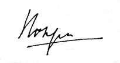
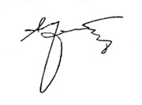
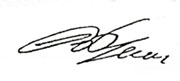
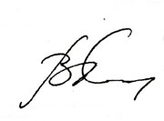
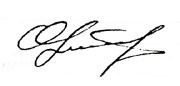

Приложение 8
I
Хочется осветить небольшой период нашей
с Дятловым жизни, учебы и работы в г. Норильске. Там в конце 40-х годов открылся
Горно-металлургический техникум МВД СССР, на электротехническом факультете которого
я впервые в 1946 г. и познакомился с Толей.
В перерыве между занятиями он первый подошел ко мне
знакомиться. Я очень удивился этому, т.к. считал себя уже взрослым (мне было
19 лет, хотя росту всего 165 см), а четыре года работы в паровозном депо среди
заключенных отучили от лишней общительности.
Познакомились. Вид у меня был несколько приблатненный,
заинтересовались другие парни и тоже подошли знакомиться. Руководил этим действом,
как потом я узнал, староста группы, фронтовик. Были среди этих парней и солидные
люди - участники войны. В сравнении с ними мой первый знакомый Толя Дятлов выглядел
совсем юнцом в свои 15 лет, хотя и был рослым и широкоплечим. Тем не менее,
среди других взрослых он как-то не терялся, не смущался. Он мне понравился своей
открытостью, уверенностью сибиряка.
Чем я ему приглянулся, и как дружба началась, не знаю.
Сначала мы старались перещеголять друг друга в учебе, становились частенько
отличниками (стипендия выше на 25 %) то на полгода, то на год. Но на год у него
чаще получалось, меня обычно подводила весенняя сессия.
Вместе жили в общежитиях. Особенно запомнились последние
два курса техникума, когда мы жили в одной комнате. Как в любой студенческой
среде были и споры, и ссоры, и драки. Но у нас с ним не возникало ни ссор, ни
драк, хотя споры были. Думаю, дело в следующем. Неизбалованный судьбой (с 1944
г. жил самостоятельно, уйдя от мачехи, когда отца мобилизовали), я вдруг почувствовал,
что он как бы заботится обо мне, следит, чтобы меня не обидели. Хотя я был старше
и опытнее его в жизненных вопросах, здесь я поддался на такую заботу, мысленно
прозвав его «мой защитник». В общем я не был паинькой, иногда вспыхивал как
порох и скандал, казалось, был неизбежен. Но Толя как-то определял нужный момент,
откуда ни возьмись появлялся и, положив руку на плечо моему супротивнику, спрашивал:
«Чего шумим, мужики?». Его рост и комплекция позволяли ему быть снисходительным,
производили должное впечатление и ссора прекращалась.
После окончания техникума мы с Толей начали работать
в п/я, получать «тяжелую воду». Потом он уехал учиться в МИФИ, но наша дружба
продолжалась. После института Анатолий оказался на Дальнем Востоке, а я на западе
в г. Обнинске, где после окончания вечернего отделения МИФИ много лет работал
на стенде по испытанию реакторов для атомных подводных лодок (АПЛ), здесь мы
готовили первые экипажи для АПЛ. Анатолий несколько раз приезжал на наши стенды.
Хочу отметить одно немаловажное обстоятельство. За все
годы почти 50-летней дружбы «до дней последних донца» я не увидел от Толи ни
одного нечестного поступка по отношению ко мне, моим родным или знакомым. Нравился
он мне своей прямотой, целеустремленностью, смелостью, умом и добротой к людям.
Всей своей жизнью он подтвердил эти качества.
| Бывшии ст. инж. Управления стенда испытания реакторов для АПЛ |
П.В. Выродов
|
II
«Нет ничего тайного, что не сделалось бы явным;
ни сокровенного, что не сделалось бы известным и не обнаружилось бы»
(Евангелие от Луки, 8-27)
Годы 1953-59 были годами нашей молодости,
студенчества. Толя был старше большинства из нас лет на пять. Но тогда он казался
нам умудренным жизненным опытом. Всегда был авторитетом и был любим нами. Староста
нашей группы.
После окончания института в 1959 г. часть мальчиков
была распределена на объекты, связанные с атомной энергетикой, с производством
и эксплуатацией ядерных установок, на атомоход «Ленин», в города Дубну, Свердловск,
а Толя попал на Дальний Восток.
Группа наша оказалась замечательной. Вот уже 40 лет
мы регулярно устраиваем встречи. Помимо них «мальчики» (и все равно и всегда
для нас мальчики) сохраняют связь отдельно, как и наша стайка «девочек».
Помню все встречи нашей группы. Особенно запомнилась
встреча по поводу 20-летия окончания МИФИ. Толя был такой веселый, энергичный,
почти не говорил прозой, так любил поэзию.
1979 г. - оставалось шесть с лишним лет до взрыва.
Ряды наши стали таять. Многие ушли в мир иной. И лишь
один был убит. Им оказался Толя Дятлов.
Как и кем был убит Анатолий и молодые ребята - персонал
на 4-м блоке ЧАЭС 26 апреля 1986г., как были загублены пожарники, тушившие пожар
на 4-м блоке после взрыва, и многие, многие в прошлом, настоящем и будущем,
как и кем - стало понятно по прочтении этой книги.
Это крик души оскорбленной и загубленной жизни.
Книга написана настолько подробно и убедительно, настолько
понятно даже для неспециалиста, что сомнений после ее прочтения не остается.
Толя пишет: «26 апреля 1986 г. Злополучный день. Жизнь
многих людей он разделил на до и после. Что уже говорить о моей жизни - глубокой
пропастью разделилась она на две вовсе несхожие части. Был практически здоровым
и последние годы только по три-четыре дня провел на больничном листе - стал
инвалидом. Был благонадежным законопослушным человеком - стал преступником.
И, наконец, был свободным гражданином -стал гражданином осужденным».
И не просто преступником, а преступником, которому приписана
вина за самую чудовищную катастрофу 20-го века - взрыв ядерного реактора со
всеми вытекающими последствиями.
26 апреля 2001 г. исполнится 15 лет со дня взрыва. В
живых уже нет ни изобретателя этого реактора, научного руководителя темы по
его разработке, в то время Президента Академии наук СССР, академика А.П. Александрова,
ни главного конструктора Н.А. Доллежаля, в то время так тщательно оберегаемых
нашим правосудием.
Верно — о мертвых или хорошо или ничего. Поэтому про
них, как про главных разработчиков, по поводу того, что разработали и допустили
к эксплуатации ненадежный реактор (реактор!!!), того, что в свое время
проигнорировали предостережения своих же сотрудников В.П. Волкова и В.Л. Иванова
об опасности его использования и ничего не предприняли, того, что довели до
взрыва и гибели людей (вот почему я говорю - Толя был убит), про них можно сказать
лишь одно: Бог им судья!
А про суд и про такие же, как суд, тенденциозные комиссии
сказано: «Каким судом судите, таким будете судимы; и какою мерою мерите, такою
и вам будут мерить». (Евангелие от Матфея, 7-2).
Почти десять лет жизни были даны смертельно больному,
получившему запредельную дозу облучения Толе. Из них четыре он провел в заключении.
Многие его друзья, ученики, сотрудники, те, кто были с ним там на станции 26
апреля 1986 г., уже давно ушли из этой жизни. А Толя еще жил. Жил книгой, надеждой,
что она будет издана, что люди узнают правду о без вины виноватых и о тех, кто
действительно виновен.
Я благодарю Бога за то, что он дал Толе эти годы жизни,
за то, что этих лет хватило, чтобы он закончил свой труд.
Он прожил 64 года. Сейчас ему бы было 70. Он был очень
мужественным человеком, сильным физически и духовно. Он мог бы еще продолжать
работать и радоваться жизни.
И, главное, Толя должен быть реабилитирован, должен
быть!
|

|
T. Покровская |
III
Впервые я познакомился с Дятловым Анатолием
Степановичем в г. Комсомольске-на-Амуре, когда приехал в 1967 г. молодым специалистом
по распределению после окончания ТЕМ на Завод им. Ленинского Комсомола (ЗЛК).
Скорее даже не познакомился, а заочно узнал о нем от окружающих, с кем пришлось
работать в «Службе 22» - так называлось подразделение, куда меня направил для
работы отдел кадров завода. В то время ЗЛК был закрытым заводом, работал на
оборону. Не удивительно, что все было окутано завесой секретности. Всякие вопросы,
которые не относились к прямой деятельности, могли вызвать определенный интерес
соответствующих органов. И все же через некоторое время без излишнего любопытства
я узнал о существовании «лаборатории 23», которая была в составе «Службы 22».
Руководителем этой лаборатории был А.С. Дятлов.
В дальнейшем, когда мне по долгу службы пришлось участвовать
в многомесячных испытаниях «заказов», я ближе познакомился с ребятами из «лаборатории
23» и их начальником. Это была группа специалистов по управлению энергетическими
установками заказов. При изучении систем заказов, во время работы в сдаточных
командах неоднократно убеждался в высочайшей квалификации «управленцев». У них
можно было получить ответ практически на любой вопрос, связанный с энергетическими
установками, конечно, в пределах своей компетенции. Одной из главных причин
такого отношения к делу была высокая требовательность руководителя группы управленцев.
Анатолий Степанович пользовался непререкаемым авторитетом у своих подчиненных,
т.к. сам до фанатизма был предан порученному делу, знал его в совершенстве и
того же требовал от своих подчиненных. В нем не было никакой «рисовки» и сам
он не принимал ничего фальшивого, надуманного. В условиях тотальной секретности
«лаборатория 23» жила своей закрытой от посторонних жизнью. Мы, работавшие в
других подразделениях отдела испытаний, по сути ничего не знали о внутренних
взаимоотношениях, внутренней жизни лаборатории. Вспоминается один эпизод.
Все, кто жил в те годы, прекрасно помнят систематические
весенние субботники, приуроченные ко дню рождения В.И. Ленина, 1 мая и т.п.
Под руководством парткома завода, парторганизаций подразделений за много дней
до очередного субботника начиналась всесторонняя подготовка к его проведению.
Определялся состав участников, заранее планировалась работа. Желательно было,
чтобы это была заметная работа, поэтому ИТР, как правило, работали на уборке
территории. В один из таких субботников весь отдел испытаний, как всегда, работал
в парке культуры завода, у нас там был свой угол, где мы каждой весной сгребали
в кучу листья и мусор. А «лаборатория 23» должна была работать на территории
завода - предстояло раскидать кучу земли, которую завезли за несколько дней
до субботника. После субботника выяснилось, что «лаборатория 23» субботник сорвала.
Оказалось, что за день до субботника Анатолий Степанович, не очень заботясь
о ритуальной составляющей запланированной на субботник работы, попросил бульдозериста,
который работал неподалеку, заодно разровнять и «субботниковую» кучу земли.
Когда начала реализовываться программа широкомасштабного
строительства АЭС на европейской части СССР, Дятлов переехал в пос. Припять
для работы в дирекции строящейся ЧАЭС. За ним потянулись комсомольчане, которые
работали вместе с Анатолием Степановичем в «лаборатории 23», в отделе испытаний
ЗЛК. Причем А.С. Дятлов, как мне известно, никого сам не приглашал. Каждый из
припятских комсо-мольчан в свое время обращался к Анатолию Степановичу с просьбой
принять заявительные документы и по возможности - выслать вызов. Так вышло и
со мной.
На ЧАЭС А.С. Дятлов, работая в качестве зам. начальника
реакторно-турбинного цеха по реакторному отделению, а далее зам. начальника
реакторного цеха (РЦ) по эксплуатации, не изменил своим принципам - знать порученное
дело досконально. В период монтажа оборудования и систем РЦ изучил «до последней
подвески» оборудование и системы реакторной установки. А потом началось комплектование
смен. Необходимо было подготовить рабочие места оперативного персонала, укомплектовать
их эксплуатационной документацией. Из операторов было создано несколько «творческих
бригад» по созданию комплекта оперативных схем реакторного отделения. Анатолий
Степанович поставил задачу: схема должна быть максимально наглядной. И потом
помногу раз возвращал на переделку схемы, которые не отвечали этому принципу,
ничего особо не объясняя, просто говорил: «Схема плохая - думайте!». В результате
в РЦ был создан отличный комплект оперативных схем, в которые позже вносились
только текущие изменения, без переделки их структуры.
После пуска 1-го, а затем и 2-го энергоблоков ЧАЭС,
начались будни эксплуатации. А.С. Дятлов был требовательным, можно сказать,
жестким руководителем. Вспоминая то время (я тогда работал старшим инженером-механиком,
а затем начальником смены РЦ), могу с уверенностью утверждать, что не было проблем
с А.С. у тех операторов, которые добросовестно, с полной отдачей относились
к своей работе. Иногда приходилось подключать и смекалку, чтобы выполнить сменное
задание - откачать воду без насоса, отогреть перемерзшие трубы без обогревателей...
Кто работал на РБМК-1000, знает, что это за проект. Тех же, кто стремился слукавить,
«уползти» от выполнения задания, спрятаться за надуманными причинами, а тем
более скрыть допущенное нарушение инструкций, Дятлов «вычислял» мгновенно. И
тогда уж получай по заслугам. Многие возмущались, обижались, понимая в душе
справедливость оценки.
По мере того, как шло строительство 3-го блока ЧАЭС,
началось формирование эксплуатационных подразделений II-ой очереди. Начальником
РЦ-2 был назначен А.С. Дятлов, который уже, в свою очередь, приступил к подбору
кадров будущего РЦ-2. Естественно, что костяком нового цеха стали специалисты
из РЦ-1, которые уже имели как опыт проведения пуско-наладочных работ, так и
оперативной работы на действующем энергоблоке. Так получилось, что Анатолий
Степанович и мне предложил перейти в РЦ-2 замом по эксплуатации. Я дал согласие
и уже начал изучать системы II-ой очереди, вникать в проблемы строящегося блока.
Но через некоторое время А.С. отозвал меня в сторонку (тогда все еще были в
РЦ-1) и сообщил, что с моим переходом в РЦ-2 случилась заминка. Как он тогда
сказал: «Не могу убедить партком станции. Они упорно «проталкивают» свою кандидатуру.
Основная претензия - я был беспартийный. Степанович тогда сказал: «Ты извини,
не получается, как планировалось. Пусть тогда будет и не по-ихнему и не по-моему».
И он предложил другую кандидатуру, которая отвечала формальным требованиям парткома
станции.
Дальше наши пути разошлись. Анатолий Степанович работал
на II-ой очереди ЧАЭС в качестве начальника РЦ-2, а потом и зам. главного инженера
станции по эксплуатации II-ой очереди. И «пересеклись» мы уже в день аварии
26 апреля 1986 г. Правда, непосредственно на станции в день аварии я с Дятловым
не встретился. Когда мы, т.е. группа помощи от РЦ-1, в составе: ст. инженер-механик
смены № 5 А.А. Нехаев, ст. инженер по эксплуатации РЦ-1 А.Г. Усков и я, прибыли
на аварийный блок 26 апреля, Анатолия Степановича уже на блоке не было — кончилось
здоровье. А встретились мы в медсанчасти г. Припяти вечером того же дня. Далее
была дорога в 6-ю клиническую больницу Москвы и длительное лечение. Чернобыльцев
разместили по всем этажам больницы. Анатолия Степановича поселили в палату на
4-м этаже больницы, а я попал на 6-й этаж. Но это не мешало всем нам, чернобыльцам,
иногда, как правило, по вечерам встречаться на лестничной площадке между этажами
и горячо обсуждать происшедшие события, кто что делал, что видел, что произошло,
какие могут быть причины. Тогда еще все были живые - шел период, как сказали
медики, мнимого благополучия. Мы еще не знали истинных причин аварии, было много
различных версий. Просто не было необходимой информации, а то, что причина уже
была заложена в проекте станции, что мы, оказывается, работали на взрывоопасном
предприятии (!!!) - такого, конечно, никто из нас даже не мог и предполагать.
Далее было следствие. Суд. Я не присутствовал ни на
одном заседании суда, хотя получил официальное приглашение как пострадавший.
Просто не хотелось присутствовать на том фарсе, конечный результат которого
был заранее предопределен официальной версией причин аварии.
Шла широкомасштабная кампания по уводу от ответственности
истинных виновников аварии. Средствами массовой информации целенаправленно формировалось
общественное мнение о вине персонала станции, который якобы вывел все защиты
и блокировки чуть ли не с единственной целью - взорвать реактор (!!!). Многие
шустрые на перо «писатели и поэты» нажили на этом популярность, на волне которой
в конечном итоге существенно улучшили свое благосостояние. А за всем этим спрятались
истинные виновники аварии, те, кто в нарушение всех норм и правил спроектировал
взрывоопасный реактор, кто после аварии расследовал причины аварии и, конечно
же, все сделал для того, чтобы переложить вину на персонал станции. Как стало
известно позже, действительные причины аварии были известны проектантам уже
в мае, но все это было для внутреннего пользования.
Реальная техническая причина аварии для специалистов
АЭС с РБМК, в том числе и ЧАЭС, становилась понятной из комплекса мероприятий,
которые стали срочно реализовываться на блоках РБМК. Конечно, мы не знали всех
подробностей событий на БЩУ-4 и 4-м энергоблоке. Но как-то не верилось, что
Дятлов, которого мы знали как начальника, как специалиста, который всегда жестко,
пунктуально требовал выполнения инструкций, вдруг позволил в своем присутствии
сделать нарушения, которые приписываются персоналу, а уж тем более приказал
напропалую нарушать инструкции. Да и никто из ребят - операторов 4-го блока
- очевидцев событий (многие из них тогда еще были живы), при общении в 6-й больнице
ни о чем подобном не говорил. Конечно, в ходе обсуждений были высказывания,
что не надо было делать ту или иную операцию, например, подниматься после провала
мощности и т.п., но это все рассуждения из серии «знать бы, где упаду, соломки
бросил». Суть в том, что персонал делал только то, что имел право делать
по действующим в то время инструкциям, а это никакое не нарушение.
В ходе следствия, в условиях изоляции и отсутствия здоровья
Анатолий Степанович вел свое расследование причин аварии. Мы, те, кто был на
воле, зачастую поражались вопросам, которые он передавал из следственного изолятора
через жену Изабеллу Ивановну. Он просил в своих записках, например, сообщить
точную редакцию конкретного пункта Правил ядерной безопасности. При этом цитировал
почти дословно первые два абзаца этого пункта и в основном передавал суть последнего,
полную редакцию которого и просил ему сообщить. Кто не понял, что это значит,
пусть попробует прочитать хотя бы одну страницу Правил, а потом процитировать
ее. В этом и был весь Дятлов. Мы несколько раз посещали Степановича, когда он
отбывал срок в «каталажке», как он сам говорил. И тогда в эти встречи продолжался
разговор о деталях аварии. Однажды Изабелла Ивановна сообщила, что Степановича,
наконец, отпускают. Нужно было забрать его не позднее 16 ч. Времени было в обрез,
а путь не близкий. Мы приехали в 15 ч 30 мин. Степанович появился на пороге
проходной после 16 ч. В руках у него были какие-то вещи. В это время в ворота
колонии заходил отряд заключенных, наверное, возвращались в зону после работы.
Несколько голосов из колонны прокричали Степановичу слова прощания. Он поднял
руку и что-то ответил. Чувствовалось, что и здесь его уважают. В Киев мы вернулись
уже ночью.
PS: После освобождения Анатолий Степанович не прекращал
разрушать официальную версию причин аварии, продолжал обращаться в различные
ведомства вплоть до МАГАТЭ. И это начало давать свои результаты, хотя высокие
организации, в том числе и зарубежные, которые в свое время протиражировали
версию о нарушениях персонала, не могут признать свою ошибку и теперь, уже защищая
«честь своего мундира», упорно продолжают множить ложь.
| В.А. Орлов |
IV
Уважаемый читатель, Вам предлагается
книга, написанная человеком, который прошел первые наиболее трагические часы
аварии вместе с персоналом ЧАЭС и сумел под непрестанным градом обвинений и
лжи выстоять. Будучи смертельно больным и сознавая, что вместе с ним уйдет информация,
он нашел в себе силы выполнить свой долг перед погибшими и рассказать о событиях,
которые произошли в ту страшную ночь 26 апреля 1986 г.
Судьба свела меня с Анатолием Степановичем первый раз
в 1969 г. на Дальнем Востоке, когда я, молодой специалист, пришел на завод после
окончания института, второй раз наши судьбы пересеклись в 1974 г., когда я приехал
работать на ЧАЭС.
Принципиальность, честность, личная ответственность
и преданность делу, которому служишь, безукоризненное знание техники, простая
человеческая порядочность и плюс полная самоотдача - вот критерии, которым надо
было отвечать каждому, кто собирался работать с Дятловым.
Вначале нам, молодым специалистам, было не просто тяжело,
а казалось невозможным поднять весь объем технического материала, для того чтобы
освоить реакторную установку так, как знал ее сам А.С., не хватало не только
двенадцати часов работы, но и суббот с воскресеньями, и только время подтвердило
его правоту, а мы стали единомышленниками.
Он мог понять ошибки, допущенные персоналом, если они
аргументированы, но он абсолютно не мог принять разгильдяйства, некомпетентности
и халатного отношения к своим обязанностям. А.С., как правило, отличали прямота,
четкость и краткость изложения своей позиции, а это не всегда шло ему на пользу.
А.С. не позволял ни себе, ни другим в его присутствии
проводить разборки с персоналом, допустившим ошибки и находящимся в данный момент
на рабочем месте. Вспоминаю случай, когда у меня (я находился за пультом) сработала
защита реактора и корабль остался без хода при отчаливании от пирса. Сдаточный
механик начал воспитывать меня, но А.С. просто выставил его из пультовой. После
сдачи смены, на разборе причины срабатывания A3 - мной была допущена ошибка
- я получил свое по полной программе от А до Я, но не от механика, а от А.С.
Характерной чертой его характера было патологическое
непринятие всякой неправды и лжи. Если кто-либо был уличен даже в неправдивом
изложении событий, не говоря уже об обмане, этому человеку он не верил на слово
никогда.
А.С. был человек, имеющий свою точку зрения по всем
вопросам (и зачастую не совпадающую с общепринятой). Он был жестким в требованиях,
но не жестоким в отношениях, он не боялся брать на себя ответственность в пределах
своей компетенции и за это отвечать, но он не собирался нести ответственность
за незнания, неумение и непрофессионализм других.
Он умел слушать и слышать собеседника, аргументировать
свою позицию, что блестяще подтвердило «судилище» в 1987 г. Характерен такой
эпизод. Когда на суде было сказано, что РБМК не отвечает и сегодня (а это был
уже 1987 г., т.е. год прошел после аварии) требованиям норм, правил и стандартов
по ядерной безопасности, судья ответил, что это к делу не относится. Оказывается,
к делу не относится то, за что судили чернобыльцев. Вот такой был суд, поэтому
формально осужден был А.С., но приговор был вынесен системе.
Обостренное чувство ответственности сочеталось в этом
человеке с могучим интеллектом, его феноменальная память просто поражала, когда
он читал на память Есенина или Блока.
Внешне А.С. не особенно заботился о своем имидже, со
стороны он казался резким, категоричным и вообще человеком со сложным характером.
Но надо было знать Дятлова, надо было видеть, как он любил детей, природу, лес,
видеть его глаза, лицо - поэтому, поверив ему в 1969 г., я верю ему и сегодня.
| Государственный инспектор по ядерной безопасности Украины |

|
А.В. Крят
|
V
Изабелла Ивановна попросила меня написать
коротенькие воспоминания о Дятлове, и не знаю, как это сделать коротко, ведь
это целая жизнь. Отделить Дятлова от наших общих знакомых, от работы невозможно,
и собственно воспоминания о Дятлове - это воспоминания о работе, о г. Комсомольске-на-Амуре,
о Припяти и, конечно, об аварии.
Меня связывают с Анатолием Степановичем Дятловым многие
годы совместной работы, и, может быть, в большей степени период после аварии
на ЧАЭС, хотя после аварии мы с ним встречались не так часто, как было нужно.
Прежде несколько слов о себе. Я профессиональный энергетик-атомщик
как по образованию, так и по работе в течение всей моей жизни. В 1970 г. я впервые
встретился с Анатолием Степановичем в г. Комсомольске-на-Амуре, куда я приехал
работать на Завод им. Ленинского Комсомола после окончания института. В то время
на этом заводе строили атомные подводные лодки, и это действительно был флагман
советского оборонно-промышленного комплекса. Громаднейшие цеха, в которых в
разной степени готовности достраивались современные для того времени атомные
ракетоносцы. Цех № 22, в котором я начал работать, был вспомогательным и объединял
несколько лабораторий и участков, которые обеспечивали радиационную безопасность,
сборку реакторов и измерения нейтронно-физических характеристик, монтаж и наладку
специального электронного навигационного оборудования и систем управления реактора.
Лаборатория, в которой я работал, называлась физической,
и основными ее задачами были контроль за сборкой главной энергетической установки
корабля, включая реакторное оборудование, и наладка этого оборудования, участие
в сдаточных испытаниях подводной лодки. Начальником этой лаборатории был Дятлов.
Лаборатория была небольшая, около двадцати человек, только мужчины. Все молодые,
только трое Русаков, Дятлов и Фочкин были стариками, им было около сорока. В
то время там долго не задерживались, закончился срок молодого специалиста и
на большую землю. В нашей лаборатории только Боря Русаков был местным, он закончил
вечерний институт и с большим трудом был принят в лабораторию, видите ли, образование
у него было не инженер-физик. В лаборатории Дятлов был бесспорным лидером, и
скорее не по официальному положению, а просто в этом никто не сомневался. Конечно,
можно сказать, что в таком коллективе, где более половины состава молодые специалисты,
просто быть лидером, я бы не сказал. На заводе Дятлов был абсолютным авторитетом
в вопросах физики и безопасности ядерной энергетической установки, с его мнением,
я думаю, считались наши научные руководители (ИАЭ им. И.В. Курчатова и ФЭИ Обнинск).
Дальнейшую мою судьбу, как и многих других сотрудников
лаборатории, определил Дятлов. Он переехал работать в Чернобыль, и за ним потянулись
другие комсомольчане (Крят, Паденок, Ситников, Чугунов, Шульгин). В Припяти
мы поддерживали землячество, общались семьями. Я не могу сказать, что я был
другом Дятлова, наверное, только Ситников поддерживал с ним очень тесные дружеские
отношения. Дятлов был сложным в общении человеком, прямой, имел собственную
точку зрения и никогда не менял ее по желанию начальника, убеждал, не соглашался,
в конце концов подчинялся, но оставался при своем мнении. Точно также он мало
считался с мнением подчиненных. Как понимаете, такого человека не все любят.
Как-то у нас с ним зашел разговор о деньгах, и он сказал, что на сберкнижке
у него немного больше пяти тысяч рублей. Он объяснил, что эта книжка ему нужна
для независимости: «если будут ломать - уйду с работы и как-нибудь перебьюсь
несколько месяцев». У него был какой-то внутренний стержень, убеждения, через
которые он никогда не мог перешагнуть. Еще в г. Комсомольске-на-Амуре Володя
Власов называл его кержаком и не потому, что Дятлов родился и вырос в Сибири,
а потому что заставить сделать его против убеждений было практически невозможно.
И когда говорят, что в угоду директору станции или главному инженеру Дятлов
мог проигнорировать принципы безопасности, дать указания отключить защиты реактора
или нарушить инструкции, я этому никогда не поверю.
| Председатель Государственного комитета ядерной безопасности Украины |

|
В.В. Грищенко
|
VI
В жизни любого человека встречаются
люди, личные качества которьк вызывают определенную симпатию и уважение. Но
только немногие из них оставляют яркий и неизгладимый след, который остается
в душе на всю жизнь. Вот одним из таких немногих, с кем довелось мне в жизни
встретиться, и был А.С. Дятлов.
С А.С. Дятловым я познакомился в 1973 г. на ЧАЭС, где
я начал работать после окончания института в 1972 г. До перехода Анатолия Степановича
на II-ую очередь ЧАЭС в 1979 г. весь мой трудовой путь был связан с ним. С момента
формирования коллектива реакторного цеха, где А.С. Дятлов был заместителем начальника
цеха по эксплуатации, молодых инженеров, таких как я, было всего несколько человек.
До пуска блока было еще далеко, и все работники цеха выполняли порученную работу,
которую обычно выполняют цеха на стадии строительства и монтажа блока. Кроме
того, будущим оперативным работникам А.С. Дятлов поставил задачу готовиться
к экзаменам на должность и соответственно изучать технику, документы по эксплуатации
и т.п. Было соответствующее распоряжение, графики поэтапной сдачи экзаменов,
но встал вопрос о нехватке времени на учебу в течение рабочего дня, который
и был задан А.С. Дятлову. Ответ был краток: «Учитесь после работы и в выходные
дни», что собственно он делал сам. А учиться нужно было всем, РБМК-1000 - техника
на то время для всех новая, а нам молодым тем более.
Прежде всего, Степаныч, так мы называли его между собой,
был требователен к себе и отдавал себя работе по полной схеме, но и спрашивал
о выполнении поставленной задачи сполна. Мелочей в нашей работе как на монтаже,
так и при эксплуатации он не признавал. Кто этого не понимал, тому специально
объяснял, умел не только убеждать, но и выслушать работника.
Не терпел Анатолий Степанович разгильдяйства в работе,
а особенно если его пытались провести-обмануть, сказать неправду. В таких случаях
он сразу же при разговоре переходил на имя и отчество, и виновник зачастую знал,
что отчитываться о выполнении работы будет в десять раз чаще, спрашивать с него
будут строже, а доверие потеряно надолго.
На похвалу в работе Анатолий Степанович был скуп, принимал
выполнение работы как должное, но мог постоять перед начальством за работника
цеха, если ему предлагали незаслуженно его наказать. Для разговора по душам,
в случае необходимости, он был открыт как простому рабочему цеха, так и инженеру,
никогда не кичился занимаемой должностью.
Чувства юмора ему не занимать, прочтете книгу и сами
убедитесь.
Надо сказать, что многих из нас А.С. Дятлов поражал
своими знаниями не только дела. Приведу один пример. Как-то поздним вечером
на смене по приемке схем реактора в вагончик, где находились несколько человек
из смены, зашел А.С. Дятлов проверить, как идет работа. Двое молодых специалистов
кому-то из заочников решали дифференциальное уравнение и у них что-то не получалось,
они шумели и его не заметили. Дятлов попросил их подвинуться на скамейке, присел
и в течение короткого времени указал на ошибку и решил задачу. А потом сказал:
«На работе нужно заниматься работой, еще раз увижу, будете писать объяснительные».
Вполне понятно, что не всем была по душе его требовательность
к выполнению работы как минимум на «хорошо», и некоторые это поняли позднее,
но естественно нашлись и те, которые воспользовались случаем бросить камень
в него на следствии, но на суд не явились...
Я лично благодарен Анатолию Степановичу за то, что его
«школа» помогла мне полнокровно влиться в ряды лучших специалистов-оперативников
на ЧАЭС.
Во второй раз меня сблизила с А.С. Дятловым наша трагедия
26.04.86 г. Хочу, уважаемые читатели, поделиться с Вами тем, как я еще познал
и мужественный характер Анатолия Степановича. Судите сами, вот выдержка из писем,
начиная с 1989г., от имени Киевского совета «Общества ветеранов ликвидации аварии
и последствий на ЧАЭС», которые практически неизменны по сути и направлялись
поочередно в Верховный Суд СССР, Председателю Верховного Совета СССР и, наконец,
президенту СССР Горбачеву М.С.
«Из четырнадцати заболеваний осужденного Дятлова А.С.
пять заболеваний (ишемическая болезнь сердца, диффузный пневмосклероз, мерцательная
аритмия, хронический обструктивный бронхит, эмфизема легких) имеются в перечне
заболеваний, являющихся основанием для предоставления осужденным освобождения
от наказания согласно Приказу МВД СССР № 213 от 30.10.1987 г. При этом в указанном
Перечне отсутствует такое заболевание, как острая лучевая болезнь (ОЛБ) 2-ой
и 3-ей степени, что, на наш взгляд, является антигуманным, и вопрос этот требует
незамедлительного решения.
Хотим подчеркнуть, что у инвалида 2-ой группы Дятлова
А.С., болеющего ОЛБ 3-ей степени в возрасте 59 лет, который отбывает наказание
в местах лишения свободы, никак не может улучшиться состояние здоровья, т.к.
болезнь ОЛБ постоянно вызывает неопределенные побочные эффекты, ухудшающие состояние
больного.
Считаем, что ответ Медуправления МВД УССР исх. 4/1-69
от 02.02.90 г. в наш адрес, в котором, в частности, изложено следующее: «Освобождению
из мест лишения свободы по болезни Дятлов А.С. не подлежит, не попадает под
требование Приказа МВД СССР», неправомерен... Из шести осужденных по данному
делу в местах лишения свободы находятся лишь двое - Дятлов А.С. и Фомин Н.М.,
которые по своему состоянию здоровья не могут, как другие осужденные, быть освобождены
условно по отбытию 1/3 срока с обязательным привлечением осужденных к труду».
После лживого суда, находясь в лагере, из которого по
закону в связи с вышеуказанными болезнями власть освободить должна, но не хочет,
сопротивляется отписками «Нет», А.С. Дятлов находил в себе силы преодолеть моральные
и физические страдания и изложить правду о событиях 26.04.86 г., проанализировать
и дать оценку различным документам об аварии, надеясь, что его все-таки когда-то
услышат и поймут.
Машина лжи о причинах Чернобыльской аварии работала
без перебоев до 1988 г., поэтому немногие из бывших учеников-коллег по работе
поддерживали связь с А.С. Дятловым, когда он отбывал срок.
Некоторые и сейчас мучаются, прав ли Степаныч во всем?
Сильна ложь, но не вечна.
Я, думаю, не ошибусь в том, что прочитав книгу Вы, уважаемые
читатели, будете знать настоящую правду о причинах Чернобыльской катастрофы
и отбросите все сомнения, которые Вам пытались навязать за прошедшие пятнадцать
лет.
Недолго прожил после освобождения А.С. Дятлов, очень
часто мы, его соратники по борьбе за правду о Чернобыле, собирались вместе и
видели, как ему нелегко, как мучают его болезни и как он мужественно все это
переносит.
Светлая ему память!
| Заместитель директора Государственного научно-технического центра по ядерной и радиационной безопасности Украины |

|
В. В. Ломакин
|
VII
В ночь с 25 на 26 апреля 1986 г. я
с Н.В. Навальным в 24 ч 00 мин принял смену на щите радиационного контроля второй
очереди. В наши обязанности входил радиационный контроль центральных залов реакторов
3-го и 4-го блоков и всех прилегающих помещений с повышенной радиационной опасностью.
После обхода 3-го блока я вернулся на щит, на 4-ый блок я не пошел, т.к. он
останавливался. Прошло буквально несколько минут, как раздался грохот со стороны
машзала. Через 5... 10 с глухой удар мощнейшей силы. Погасли свет и световая
сигнализация на панели 4-го блока, панель 3-го блока загорелась красным светом
и завизжала звуковая сигнализация, из люка приточной вентиляции понесло чернорыжую
пыль....
Так я оказался в эпицентре ядерной катастрофы, которая
за считанные минуты могла стать для меня роковой. В эту ночь мне пришлось вплотную
столкнуться с начальником смены 4-го блока А.Ф. Акимовым, заместителем главного
инженера по эксплуатации П-ой очереди А.С. Дятловым, Л. Телятниковым и многими
другими участниками ликвидации этой катастрофы, к большому сожалению, многих
уже нет в живых. В очередную 15-ую годовщину той ужасной ночи хочется вспомнить
всех погибших наших ребят: Акимова А.Ф., Баранова А.И., Бражника B.C., Вершинина
Ю.А., Дегтяренко В.М., Коновала Ю.И., Кудрявцева А.Г., Кургуза А.Х., Лелеченко
А.Г., Лопатюка В.И., Новика А.В., Перевозченко В.И., Перчу-ка К.Г., Проскурякова
В.В., Ситникова А.А., Топтунова Л.Ф., Ходемчу-ка В.И. (могила - 4-ый блок),
Шаповалова А.И., Шашенка В.Ф., Бусыгина Г.В., Коваленко А.П., Дятлова А.С.,
Гашимова М.У.... Не было той ночью паники, халатности и разгильдяйства, не было
страха и неквалифицированных действий, как много писалось за эти 15 лет. У всех
был немой вопрос в глазах - почему? И каждый делал, что должен, что обязан,
что мог, спасали оборудование, тушили возгорания, искали и выносили пострадавших.
27 апреля вместе с А.С. Дятловым я попал в 6-ую больницу
Москвы. В первые дни велись одни и те же разговоры: предполагали, спорили, думали
- почему взрыв? Анатолий Степанович был худощав, подтянут, всегда спокоен и
выдержан, убедительно говорил: «мы все делали правильно», иногда задумывался...
Часто донимали следователи, было мнение, что это диверсия. Появились версии
о виновности персонала... Почти каждый день кто-то умирает... В душе пустота,
неизвестно будущее - жить или умереть, где семья?
На 60-е сутки у меня пошла вторая волна ожогов, еще
не залечены первые, а стали появляться новые красно-вишневые пятна, с каждым
днем все больше и больше... Долгие месяцы лечения. Низкий поклон всем медикам,
и врачам и медсестрам.
27 октября выписали домой инвалидом с повязками на ранах,
которые тревожат по сегодняшний день. 31 декабря 1986 г. везут на родную станцию
и тайно вручают правительственные награды: ордена и медали — живым, ордена посмертно
- вдовам. Неужели не нашли места в Киеве или в нем награждали только героев?!
Нашли «стрелочников» - судят. Через несколько лет их освобождают. И опять тишина?!
Как смотреть в глаза детям павших?! За что или кого погибли их отцы?!
С Анатолием Степановичем Дятловым жили в одном доме,
часто встречались во дворе, в больницах. Последний раз за несколько месяцев
перед его смертью лежали в Пуще-Водице. Вечер, собираемся ужинать, у Анатолия
Степановича были сильные головные боли, а он говорит: «Как хочется, мужики,
услышать правду, когда, наконец, народ узнает, как это было?! Как хочется еще
пожить, но моя голова не дает мне жизни - ни днем, ни ночью, а как хочется потянуть
рюмашку и закусить черным хлебом с салом!» Черного хлеба с салом Степаныч съел
с удовольствием. Мужественный был мужик. Царство небесное, земля им всем пухом
и вечная память живых, а не немая тишина и небытие.
| Бывший дежурный дозиметрист 5-ой смены Отдела охраны труда и техники безопасности ЧАЭС |

|
Н.Ф. Горбаченко
|